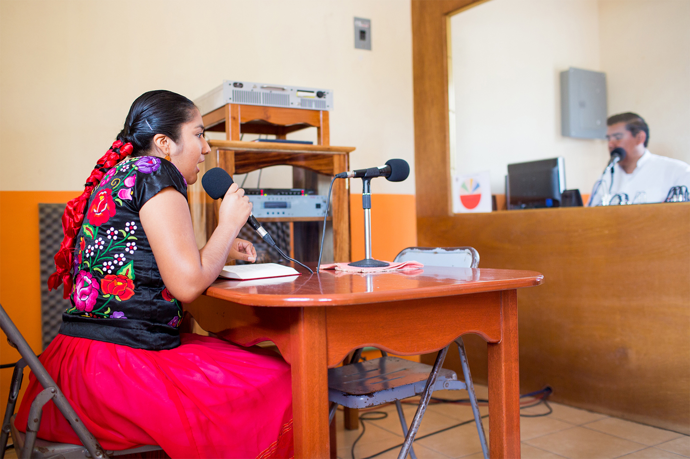
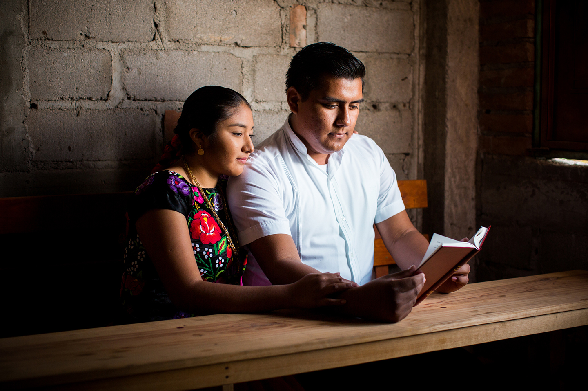

A TIME TO LOVE
By Barbara Coots
Israel Santiago's world changed the moment he saw Silvia
Guerra. It was summer 2012, and they were both 17. He was
helping to lead a summer Bible study for children, teens and
young adults when a group of girls walked in.
"All of a sudden, I focused on her," he recalls. "And I thought,
Oh, Lord. Oh, God."
That Song-of-Solomon moment ended quickly as Israel shyly
tried to hide behind a speaker cabinet. But Silvia saw him.
"I also sensed something special," she says.
Little did either of them know that their looming romance also
would lead them into Bible translation work together.
Israel and Silvia were both Christian workers from the Oaxacan
region of Mexico that includes Juchitàn de Zaragoza, Israle's
hometown. That summer, they got acquainted, but that was
about all.

The following summer, Israel got an assignment to direct a
three-day class near Silvia's hometown, Alvaro Obregon. He remembered
Silvia and requested that she be approved as a translator
for the Spanish-speaking teachers and Zapotec students.
She was, and she accepted.
At the end of the third day, he declared his feelings for her. He
included the words, "if it is God's will." To her, that set him apart
from other suitors she had easily dismissed.
"We both were praying to the Lord to guide us, and to have a
spouse who would be devoted and serving God," Israel says.
They married last year at age 20. Today they serve on the team
that is translating the Old Testament into Zapotec, their mother
tongue. Even before they heard of the project, they had drafted
translation of Psalms, 25 chapters of Proverbs ... and the Song
of Solomon. The poetic love verses have enriched their first
year of marriage.

In the lyrical language of Zapotec, "It is the daily way of a man
talking to a woman," Israel says.
The Zapotec language is rich in metaphors, and the poetic
books resonate with the people. Israel says when he hears Proverbs
in Zapotec, "it is as if I am listening to my grandfathers."
Israel and Silvia celebrated their first anniversary in April.
"There is a Bible verse that stood out to us from the beginning,"
Silvia says. "Ecclesiastes 1:3. 'There is a time for everything.'"